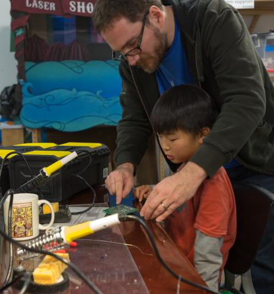

Curiosity Hacked

Hello and thank you for your interest in Curiosity Hacked! We started with a vision of bringing STEAM (science, technology, engineering, art, and math) education to our community in a relevant and exciting way! We focus on real skill building and a developmentally progressive structure to helps kids and families get the most out of Hacking and Making.
We were founded in Oakland, CA as a partner of Ace Monster Toys Hackerspace. We are a separate national non-profit organization, however, operating under the fiscal umbrella of The School Factory. We offer three programs that are designed to meet the needs of all ages, abilities, and interests. You can read more about Curiosity Hacked Open Lab, Guild, and Sparks on our website.
We assist groups in forming new Curiosity Hacked locations, and we also keep a list of interested families by area that we can connect to form new groups.
For groups wanting to join our organization, we have developed guidelines of benefits and expectations. To become a Curiosity Hacked Guild, potential leaders must meet, either in person or via the Internet to go over our program, mission, and our agreement with a member of the Curiosity Hacked staff. Once we have established that all parties would like to move forward, we ask that the potential leaders sign an agreement committing to our mission statement and the terms laid out in our benefits and expectations.
The Curiosity Hacked Mission:
Curiosity Hackeds is a non-profit organization dedicated to addressing the needs of the global maker community through STEAM education. The Curiosity Hacked program guides children through concept, process, and product by focusing on skill building and supporting individual goals. Our open source programs promote learning through a variety of developmental and educational methods while also focusing on community and family engagement. Curiosity Hacked encourages the relentless pursuit of knowledge through relevant hands-on activities and the development of a strong moral character and leadership skills through our core values.
As a registered Curiosity Hacked Guild you receive the following benefits:
- Initial consultation to help you get started
- As needed consultations with the Curiosity Hacked directors and mentors regarding programs, teaching, administrative issues, marketing and fundraising.
- Access to our growing database of activities and resources.
- Use of the Curiosity Hacked name and badges
- Information on and access to educational discounts from educational and material supply companies.
- Access to a mentor-only list where you can ask questions and get support.
- Representation on our website map to help others in your area find you, and a designated @curiosityhacked.org email.
- A dedicated page on our national website to document and highlight the activities and accomplishments of your Guild.
- The ability to receive tax-deductible donations as a part of our non-profit organization.
- Financial structure and Liability Insurance
- Financial assistance when available from national funding.
- National community building events.
As a Curiosity Hacked Guild, you agree to:
- Maintain a commitment to, and promote our mission statement and core values.
- Document and publish Guild activities, including but not limited to, a guild monthly report with photos to put on our website, including assessments.
- Participation in adding online lesson plans, resources and notes to share information with other guilds.
- Manage the Guild’s finances and keeping accurate financial records.
- Do not discriminate in member selection. Curiosity Hacked is committed to a policy of equal opportunity for all persons and does not discriminate on the basis of race, color, national origin, sex, sexual orientation, gender identity, gender expression, disability, or religion in our educational programs and activities.
- Follow the Safety guidelines set forth in the Curiosity Hacked Safety Manual.
- Follow the Curiosity Hacked program guidelines (including the Hackerling circuit, and badge requirements) to keep consistency with the national program standards
- Maintain background checks on all Guild Leaders and mentors who will be working with children without a guild leader present. These background checks must be filed with the Curiosity Hacked national office in a timely fashion
- Conduct training to educate leaders in Curiosity Hacked mission and values
- Have each scout and their guardian fill out a Curiosity Hacked registration and liability waiver form.
We hope you will join our community! Please let us know if you have any questions or would like to move forward in
starting a new Curiosity Hacked program in your area!